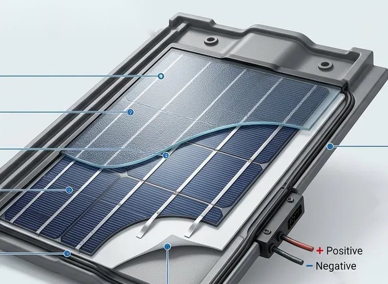

Főoldal / Napelemes tetőcserép
A tető,ami áramottermel.
A fedés maga az erőmű: egybefüggő, szép felület, ráépített panelek nélkül.
Hogyan működik
Egy cserép, ami áramot termel
A napelemes tetőcserép a fedés része: a cserépsorokba illeszkedő, áramtermelő elemekből áll. Nincs ráépített panel, a tető egybefüggő felületként néz ki. Még ritka megoldás, és drágább is, ezért nem mindenkinek ez a jó választás. A felmérésen számokkal megmutatjuk, megéri-e nálad.

- 01Védő felső felületEdzett, texturált üveg. Védi a cellákat a jégtől és a szennyeződéstől, és átengedi a fényt.
- 02Napelem-cellákKristályos szilícium cellák. Ezek alakítják a fényt árammá.
- 03VezetősávokFémszalagok, amelyek összegyűjtik a cellák áramát és továbbítják.
- 04Hátlap és ágyazóanyagRögzíti a cellákat, és védi őket a nedvességtől a modul alján.
- 05TömítésRugalmas gumiszegély, ami vízzáróvá teszi a modul és a cserépkeret csatlakozását.
- 06Csatlakozódoboz és vezetékekA pozitív és negatív vezeték innen indul, a cserép alatt fut az inverter felé.
- 07Cserépbe illesztésA keret a szomszédos cserepekkel zár, így a sor egybefüggő marad.
Szemléltető ábra. A konkrét termék felépítése gyártónként eltérhet. Kattints vagy vidd az egeret a számokra.
Görgess lefelé · a tető szétnyílik · alulról felfelé építkezünk
Hét réteg, felül napelemes cserép

Mi tudjuk, mi kell a jó tetőhöz!
Egy megfelelően kivitelezett szerkezet, és rajta energia a napból!
Összehasonlítás
Ráépített panel vagy napelemes cserép?
 AI által generált kép
AI által generált képÉrdemes napelemes cserepet választani, ha
- az épület megjelenése kiemelten fontos (szép tető, védett környezet)
- úgyis tetőcsere esedékes, így a fedéssel egy lépésben készül
- a költségkeret engedi a magasabb beruházást
Inkább ráépített panel, ha
- adott tetőn a lehető legnagyobb teljesítmény a cél
- szűkös a költségkeret
- a rendszert később bővíteni szeretnéd
Általános szempontok, szemléltető fotókkal. A felmérés dönti el, melyik való a te házadra.
Kérdések
Napelemes tetőcserép: amit érdemes tudni
Miben más a napelemes tetőcserép, mint a hagyományos panel?
A hagyományos panelt a kész tetőre rögzítik tartókkal. A napelemes cserép a fedés része, a cserépsorok között ül. Ezért egybefüggő a felület, és nincs külön tartószerkezet.
Mennyivel drágább?
Jellemzően magasabb a beruházás, mint cserép és ráépített panel esetén. A pontos különbség a terméktől és a tető méretétől függ, árat csak felmérés után adunk.
Mennyi áramot termel?
Az integrált elemek felülete és teljesítménye általában kisebb, mint egy ráépített panelsoré, ezért adott tetőn tipikusan kevesebb teljesítmény fér el. A felmérésen a te tetődre és a számláidra számolunk.
Cserélhető, ha egy elem megsérül?
Az elemek általában külön cserélhetők, de a pontos eljárás gyártónként más. Az ajánlatban rögzítjük.
Kell hozzá engedély, és ki intézi?
Az üzembe helyezéshez egyeztetünk az áramszolgáltatóval, a mérettől és az épület helyétől függően más hatósági lépések is jöhetnek. Az ügyintézést átvállaljuk.
Milyen tetőre lehet felrakni?
A hajlásszög, a tájolás, az árnyékolás és a tartószerkezet teherbírása számít, valamint az, hogy a kiválasztott termék milyen cserépsorokhoz illeszkedik. Mindezt a felmérésen nézzük meg.
Gyors árbecslő
Pár másodperc alatt ad egy tájékozódó sávot
Válaszd ki a munkát, húzd a csúszkát, és látod a nagyságrendet. A pontos, tételes ajánlatot a helyszíni felmérés után kapod.
Beszéljünk a tetődről
A helyszíni felmérés ingyenes, a válaszra 24 órán belül jelentkezünk.